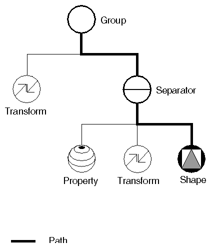

De base, FreeCAD est une puissante compilation de différentes bibliothèques graphiques, la plus importante étant OpenCascade, pour la gestion et la construction des formes géométriques, Coin3d pour l'affichage des formes géométriques, et Qt pour créer une interface utilisateur graphique (GUI) agréable et fonctionnelle.
Les formes géométriques qui apparaissent dans les vues 3D de FreeCAD sont des rendus obtenus par la bibliothèque Coin3D (Coin3D est une application de OpenInventor standard).
Le logiciel OpenCascade fournit les même fonctionnalités que coin3D, mais, dans les débuts de FreeCAD, il a été décidé de ne pas utiliser le moteur d'OpenCascade et de se tourner plutôt vers le logiciel coin3D plus performant. Une bonne façon de se renseigner sur cette bibliothèque est de lire le livre Open Inventor Mentor.
Actuellement OpenInventor est un langage de description de scènes en 3 dimensions. La scène décrite dans OpenInventor est restituée en OpenGL sur votre moniteur.
Coin3D prend en charge toutes ces procédures, de telle sorte que le programmeur n'a pas besoin de traiter les appels complexes d'OpenGL, il lui suffit simplement de fournir le code OpenInventor adéquat.
Le gros avantage d'OpenInventor est, qu'il est une norme fort bien connue et très bien documentée.
Le gros travail que FreeCAD fait pour vous, consiste essentiellement à traduire les informations sur les formes géométriques OpenCascade en langage OpenInventor.
OpenInventor décrit une scène 3D sous la forme d'une scène graphique , comme le montre l'exemple ci dessous:
 image from Inventor mentor
OpenInventor scenegraph, décrit tout ce qui fait partie d'une scène 3D, comme les formes géométriques, les couleurs, les matériaux, les lumières etc., et structure toutes les données d'une manière claire et précise.
Cette structure peut être groupée en sous-structures vous permettant d'organiser le contenu de votre scène de la manière qui vous conviens le mieux.
Voici un exemple d'un fichier OpenInventor:
#Inventor V2.0 ascii
Separator {
RotationXYZ {
axis Z
angle 0
}
Transform {
translation 0 0 0.5
}
Separator {
Material {
diffuseColor 0.05 0.05 0.05
}
Transform {
rotation 1 0 0 1.5708
scaleFactor 0.2 0.5 0.2
}
Cylinder {
}
}
}
Comme vous pouvez le voir, la structure est très simple. Vous utilisez des séparateurs (Separator) pour organiser vos blocs de données, un peu comme vous le feriez pour organiser vos fichiers dans des dossiers.
Chaque instruction influe celle qui suit, par exemple, les deux premiers articles à la racine de nos Separator sont une rotation (RotationXYZ {..}) et une transformation (Transform {..}), ils auront une incidence directe sur tous les éléments suivants (comme, si vous changez l'attribut d'un dossier, tous les sous dossiers seront affectés).
Dans un séparateur, nous définirons la matière, dans un autre, la transformation. Notre cylindre sera donc affecté par les deux transformations, celle qui lui a été appliqué directement et celle qui a été appliquée à son séparateur parent (Separator{..Separator{..}} à la manière des dossiers dans un disque dur).
Nous avons également beaucoup d'autres d'éléments pour organiser notre scène (projet), tels que des groupes, des commutateurs ou des annotations.
Nous pouvons donner à nos objets des définitions très complexes, de la couleur, des textures des modes d'ombrage et de transparence. Nous pouvons aussi définir de la lumière, des caméras et, même du mouvement.
Il est aussi possible d'intégrer des portions de scripts dans des fichiers OpenInventor et de définir des comportements plus complexes.
Si vous voulez en apprendre plus sur OpenInventor, allez tout de suite sur The Inventor Mentor: Programming Object-Oriented 3D Graphics with Open Inventor.
Normalement, dans FreeCAD, nous n'avons pas besoin d'interagir directement avec scenegraph OpenInventor.
Dans un document FreeCAD, chaque objet maillage, forme de la pièce ou toute autre chose, est automatiquement converti en code OpenInventor et est inséré dans la scène graphique que vous voyez dans la vue 3D.
Toutes modifications dans le document, ajout ou suppression d'objets, sont en permanence mises à jour dans la scène graphique. En fait, chaque objet (dans l'espace de l'Application), dispose d'un constructeur de la vue (un objet correspondant dans l'espace Gui), responsable de la création du code OpenInventor.
Mais il y a de nombreux avantages à pouvoir accéder directement à la scène graphique. Par exemple, nous pouvons modifier temporairement l'apparence d'un objet, ou nous pouvons ajouter des objets à la scène qui n'ont aucune existence réelle dans le document FreeCAD, tels que la construction de la géométrie, les aides, conseils graphiques ou des outils qui permettent des manipulations ou des informations à l'écran.
FreeCAD dispose de plusieurs outils pour voir ou modifier le code OpenInventor.
Par exemple, le code Python suivant, montre la représentation OpenInventor d'un objet sélectionné:
obj = FreeCAD.ActiveDocument.ActiveObject viewprovider = obj.ViewObject print viewprovider.toString()
Mais nous avons aussi un module Python qui permet un accès complet à toute chose gérée par Coin3D, comme, notre scène graphique FreeCAD.
Alors, lisez la suite sur la page de pivy.
{kind=link}